СП 432.1325800.2019 «Покрытия огнезащитные. Мониторинг технического состояния»
О документе: разработчики, утверждение, регистрация, ключевые слова
- 1 ИСПОЛНИТЕЛЬ - АО «НИЦ «Строительство» - ЦНИИСК им. В.А. Кучеренко
- 2 ВНЕСЕН Техническим комитетом по стандартизации ТК 465 «Строительство»
- 3 ПОДГОТОВЛЕН К УТВЕРЖДЕНИЮ Департаментом градостроительной деятельности и архитектуры Министерства строительства и жилищнокоммунального хозяйства Российской Федерации (Минстрой России)
- 4 УТВЕРЖДЕН Приказом Министерства строительства и жилищнокоммунального хозяйства Российской Федерации от 24 января 2019 г. № 37/пр и введен в действие с 25 июля 2019 г.
- 5 ЗАРЕГИСТРИРОВАН Федеральным агентством по техническому регулированию и метрологии (Росстандарт)
В случае пересмотра (замены) или отмены настоящего свода правил соответствующее уведомление будет опубликовано в установленном порядке. Соответствующая информация, уведомление и тексты размещаются также в информационной системе общего пользования - на официальном сайте разработчика (Минстрой России) в сети Интернет
© Минстрой России, 2019
Настоящий свод правил на может быть полностью или частично воспроизведен, тиражирован и распространен в качестве официального издания на территории Российской Федерации без разрешения Минстроя России
Дата введения - 2019-07-25
УДК ОКС 13.220.50
Ключевые слова: огнезащитные покрытия, мониторинг, техническое состояние, дефект, критерии оценки, толщина покрытия, адгезия, термический анализ, конструктивная огнезащита, тонкослойное вспучивающееся огнезащитное покрытие, коррозия, меление, конструктивная огнезащита
\_\_\_\_\_\_\_\_\_\_\_\_\_\_\_\_\_\_\_\_\_\_\_\_\_\_\_\_\_\_\_\_\_\_\_\_\_\_\_\_\_\_\_\_\_\_\_\_\_\_\_\_\_\_\_\_\_\_\_\_\_\_\_\_\_\_\_\_\_\_\_\_\_\_\_\_\_\_\_
ИСПОЛНИТЕЛЬ
АО «НИЦ «Строительство»
| наименование организации | Зам. генерального директора должность | личная подпись | С.Н. Богачев инициалы, фамилия |
|---|---|---|---|
| Руководитель разработки | Директор ЦНИИСК им. В.А. Кучеренко должность | личная подпись | И.И. Ведяков инициалы, фамилия |
| Исполнитель | Вед .специалист НЭБ ПБС | Г.П. Еремина | |
| должность | личная подпись | инициалы, фамилия |
Введение
6 ВВЕДЕН ВПЕРВЫЕ
Настоящий свод правил разработан с учетом федеральных законов от 29 декабря 2004 г. № 190-ФЗ «Градостроительный кодекс Российской Федерации», от 27 декабря 2002 г. № 184-ФЗ «О техническом регулировании», от 30 декабря 2009 г. № 384-ФЗ «Технический регламент о безопасности зданий и сооружений», от 22 июля 2008 г. № 123-ФЗ «Технический регламент о требованиях пожарной безопасности» в части требований к строительным конструкциям при применении средств огнезащиты.
Настоящий свод правил разработан авторским коллективом АО «НИЦ «Строительство» - ЦНИИСК им. В.А. Кучеренко (руководитель работы -д-р техн. наук, проф. А.И. Звездов, ответственный исполнитель -д-р техн. наук, проф. И.И. Ведяков , исполнители д-р техн. наук, проф. Ю.В. Кривцов , канд. техн. наук И.Р. Ладыгина , Г.П. Еремина ).
Мониторинг технического состояния
Fireproof coatings. Monitoring of technical condition
1Область применения
Настоящий свод правил распространяется на мониторинг огнезащитных покрытий несущих стальных, железобетонных, деревянных строительных конструкций зданий и сооружений, электрических кабелей и металлических воздуховодов в целях определения их технического состояния в процессе эксплуатации.
Настоящий свод правил регламентирует процедуру, состав работ при проведении мониторинга технического состояния огнезащитных покрытий несущих стальных, железобетонных, деревянных строительных конструкций зданий и сооружений, электрических кабелей и металлических воздуховодов и устанавливает требования к методам и критериям оценки технического состояния и принятия обоснованных технических решений по ремонтно-восстановительным мероприятиям и способам устранения дефектов.
2Нормативные ссылки
В настоящем своде правил использованы нормативные ссылки на следующие документы:
ГОСТ 9.407-2015 Единая система защиты от коррозии и старения. Покрытия лакокрасочные. Метод оценки внешнего вида
ГОСТ 166-89 (ИСО 3599-76) Штангенциркули. Технические условия
ГОСТ 427-75 Линейки измерительные металлические. Технические условия
ГОСТ 7025-91 Кирпич и камни керамические и силикатные. Методы определения водопоглощения, плотности и контроля морозостойкости
ГОСТ 7048-81 Бинокли. Типы и основные параметры. Общие технические требования ГОСТ 7502-98 Рулетки измерительные металлические. Технические условия
\_\_\_\_\_\_\_\_\_\_\_\_\_\_\_\_\_\_\_\_\_\_\_\_\_\_\_\_\_\_\_\_\_\_\_\_\_\_\_\_\_\_\_\_\_\_\_\_\_\_\_\_\_\_\_\_\_\_\_\_
| ГОСТ 9980.2-2014 (ISO 1513:2010, ISO 15528:2013) Материалы лакокрасочные и сырье | |||
|---|---|---|---|
| для них. Отбор проб, контроль и подготовка образцов для испытаний | |||
| ГОСТ 11042-90 Молотки стальные строительные. Технические условия | |||
| ГОСТ 15140-78 Материалы лакокрасочные. Методы определения адгезии | |||
| ГОСТ 16976-71 Покрытия лакокрасочные. Метод определения степени меления | |||
| ГОСТ 17177-94 Материалы и изделия строительные теплоизоляционные. Методы ис- | |||
| пытаний ГОСТ 25706-83 | |||
| Лупы. Типы, основные параметры. Общие технические требования ГОСТ 28246-2017 Материалы лакокрасочные. Термины и определения | |||
| ГОСТ 28574-2014 Защита от коррозии в строительстве. Конструкции бетонные и желе- | |||
| зобетонные. Методы испытаний адгезии защитных покрытий ГОСТ 30247.0-94 (ИСО 834-75) Конструкции строительные. Методы испытаний на | |||
| ог- | |||
| нестойкость. Общие требования | |||
| ГОСТ 30247.1-94 Конструкции строительные. Методы испытаний на огнестойкость. | |||
| Несущие и ограждающие конструкции ГОСТ 31149-2014 (ISO 2409:2013) Материалы лакокрасочные. Определение адгезии | |||
| методом решетчатого надреза | |||
| ГОСТ 31993-2013 (ISO 2808:2007) Материалы лакокрасочные. Определение толщины | |||
| покрытия | |||
| ГОСТ 32299-2013 (ISO 4624:2002) Материалы лакокрасочные. Определение адгезии отрыва | |||
| ГОСТ 32702.2-2014 (ISO 16276-2:2007) Материалы лакокрасочные. Определение адге- | |||
| зии методом Х-образного надреза | |||
| ГОСТ ЕN 823-2011 Изделия теплоизоляционные, применяемые в строительстве. Ме- | |||
| измерения толщины | |||
| ГОСТ Р 53293-2009 Пожарная опасность веществ и материалов. Материалы, вещества | |||
| средства огнезащиты. Идентификация методами термического анализа требова- | |||
| Метод определения огнезащитной эффективности | |||
| огнеза- | |||
| ГОСТ Р 56542-2015 Контроль неразрушающий. Классификация видов и методов | |||
| СП 329.1325800.2017 Здания и сооружения. Правила обследования после | |||
| пожара | |||
| щитной эффективности | |||
| ГОСТ Р 53311-2009 Покрытия кабельные огнезащитные. Методы | |||
| определения | |||
| методом | |||
| тоды | |||
| и | ГОСТ Р 53295-2009 Средства огнезащиты для стальных конструкций. Общие | ния. |
Примечание - При пользовании настоящим сводом правил целесообразно проверить действие ссылочных документов в информационной системе общего пользования - на официальном сайте федерального органа в области стандартизации в сети Интернет или по ежегодному информационному указателю «Национальные стандарты», который опубликован по состоянию на 1 января текущего года, и по выпускам ежемесячного информационного указателя «Национальные стандарты» за текущий год. Если заменен ссылочный документ, на который дана недатированная ссылка, то рекомендуется использовать действующую версию этого документа с учетом всех внесенных в данную версию изменений. Если заменен ссылочный документ, на который дана датированная ссылка, то рекомендуется использовать версию этого документа с указанным выше годом утверждения (принятия). Если после утверждения настоящего свода правил в ссылочный документ, на который дана датированная ссылка, внесено изменение, затрагивающее положение, на которое дана ссылка, то это положение рекомендуется применять без учета данного изменения. Если ссылочный документ отменен без замены, то положение, в котором дана ссылка на него, рекомендуется применять в части, не затрагивающей эту ссылку. Сведения о действии свода правил целесообразно проверить в Федеральном информационном фонде стандартов.
3Термины и определения
В настоящем своде правил применены следующие термины с соответствующими определениями:
- 3.1аварийное состояние огнезащитного покрытия
- Категория технического состояния огнезащитного покрытия, имеющего дефекты и повреждения, не отвечающие требованиям проекта огнезащиты или норм, при котором невозможна его дальнейшая эксплуатация и требуется полная замена.
- 3.2аналитическая идентификация
- Отнесение объекта аналитического контроля или его компонентов к конкретному веществу, материалу, классу веществ или материалов. [ГОСТ Р 52361-2005, раздел 2, статья 39]
- 3.3восстановление огнезащитных покрытий
- Комплекс мероприятий, обеспечивающих доведение эксплуатационных качеств огнезащитных покрытий, пришедших в ограниченно работоспособное состояние, до уровня их первоначального состояния, определяемого соответствующими требованиями нормативных документов.
- 3.4гарантийный срок службы огнезащитной обработки
- Срок эксплуатации, в течение которого разработчик ОС (изготовитель, производитель огнезащитной обработки) гарантирует соответствие огнезащитной обработки требованиям технической документации на огнезащитные составы.Источник: ГОСТ Р 53292-2009, статья 3.13
- 3.5значимые идентификационные характеристики термического анализа (критерии идентификации)
- Характеристики термоаналитических кривых, по которым устанавливается идентичность веществ (материалов) и средств огнезащиты.Источник: ГОСТ Р 53293-2009, статья 3.14
- изменение цвета лакокрасочного покрытия
- Изменения цвета лакокрасочного покрытия в результате воздействия внешних факторов (побеление, потемнение, пожелтение и другие изменения).Источник: ГОСТ 9.407-2015, статья 3.6
- 3.7качественные идентификационные характеристики термического анализа
- Характеристики термоаналитических кривых, которые дополняют информацию о процессе разложения.Источник: ГОСТ Р 53293-2009, статья 3.15
- 3.8конструктивная огнезащита
- Способ огнезащиты строительных конструкций, основанный на создании на обогреваемой поверхности конструкции теплоизоляционного слоя средства огнезащиты. К конструктивной огнезащите относятся толстослойные напыляемые составы, штукатурки, облицовка плитными, листовыми и другими огнезащитными материалами, в том числе на каркасе, с воздушными прослойками, а также комбинация данных материалов, в том числе с тонкослойными вспучивающимися покрытиями. Способ нанесения (крепления) огнезащиты должен соответствовать способу, описанному в протоколе испытаний на огнестойкость и в проекте огнезащиты.Источник: ГОСТ Р 53295-2009, статья 3.6
- 3.9коррозия металлов (коррозионное разрушение)
- Разрушение металлов вследствие химического или электрохимического взаимодействия их с коррозионной средой.
- [[ГОСТ 5272-68, статья 1]](http
- //docs.cntd.ru/document/1200008724)
- 3.10критерий оценки технического состояния огнезащитных покрытий
- Установленное проектом или нормативным документом количественное или качественное значение параметра, характеризующего целостность, толщину, адгезию и другие нормируемые характеристики огнезащитных покрытий.
- 3.11лакокрасочное покрытие
- Сплошное покрытие, сформированное в результате нанесения одного или нескольких слоев лакокрасочного материала на окрашиваемую поверхность. [ГОСТ 9.072-2017, статья 3]
- 3.12меление лакокрасочного покрытия
- Появление на поверхности лакокрасочного покрытия тонкого легко снимаемого порошка, вызванное деструкцией одного или нескольких его компонентов.Источник: ГОСТ 9.072-2017, статья 181
- 3.13нормативное техническое состояние огнезащитных покрытий
- Категория технического состояния, при котором количественные и качественные значения критериев оценки технического состояния огнезащитных покрытий, включая состояние грунтовочных, огнезащитных и защитных покрытий, соответствуют установленным в проектной документации значениям с учетом пределов их изменения.
- 3.14объект огнезащиты
- Конструкция или изделие, подвергаемые обработке средством огнезащиты в целях снижения их пожарной опасности и (или) повышения огнестойкости. [ГОСТ Р 53295-2009, статья 3.8]
- 3.15мониторинг технического состояния огнезащитных покрытий (общий мониторинг)
- Система наблюдения и контроля, проводимая по определенной программе, для выявления конструкций, обработанных огнезащитными составами, на которых произошли значительные видимые изменения в виде дефектов огнезащитных покрытий (растрескивания, отслоения, вздутия, коррозия и т. д.) и для которых необходимо детальное обследование технического состояния путем инструментальных измерений.
- 3.16образование пузырей (вздутие) на лакокрасочном покрытии
- Выпуклая деформация лакокрасочного покрытия, обусловленная локальным отделением одного или нескольких составляющих его слоев.
- 3.17обследование технического состояния огнезащитных покрытий
- Комплекс мероприятий по определению и оценке фактических значений контролируемых параметров, характеризующих функциональную надежность и эффективность огнезащитных покрытий и определяющих возможность их дальнейшей эксплуатации или необходимость восстановления, ремонта, включающий в себя выявление дефектов.
- 3.18огнезащитная эффективность
- Показатель, характеризующий способность огнезащитного состава снижать горючесть древесины и материалов на ее основе.Источник: ГОСТ Р 53292-2009, статья 3.3
- 3.19огнезащитная эффективность
- Показатель эффективности средства огнезащиты, который характеризуется временем в минутах от начала огневого испытания до достижения критической температуры (500 °С) стандартным образцом стальной конструкции с огнезащитным покрытием и определяется методом, изложенным в разделе 5 настоящего стандарта. [ГОСТ Р 53295-2009, статья 3.4]. Примечание - Метод определения огнезащитной эффективности приведен в разделе 5 ГОСТ Р 53295-2009.
- 3.20огнезащитное покрытие
- Полученный в результате огнезащитной обработки слой (слои) на поверхности объекта огнезащиты.Источник: ГОСТ Р 53292-2009, статья 3.9
- 3.21огнезащитное кабельное покрытие
- Слой вещества (смеси) или материала, полученный в результате его нанесения на поверхность кабелей и обладающий огнезащитной эффективностью.
- 3.22огнестойкость строительной конструкции
- Способность строительной конструкции сохранять несущие и (или) ограждающие функции в условиях пожара.Источник: СП 2.13130.2012, статья 3.1
- 3.23ограниченно работоспособное состояние огнезащитного покрытия
- Категория технического состояния огнезащитного покрытия, имеющего дефекты и повреждения, не отвечающие требованиям проекта огнезащиты или нормативных документов, при котором его функционирование возможно лишь после проведения локальных ремонтно-восстановительных работ.
- 3.24отслаивание лакокрасочного покрытия
- Самопроизвольное отделение некоторых участков лакокрасочного покрытия от окрашиваемой поверхности вследствие потери адгезии. [ГОСТ 9.072-2017, статья 185]
- 3.25оценка технического состояния огнезащитных покрытий
- Установление степени повреждения огнезащитных покрытий в целом на основе сопоставления фактических значений оцениваемых параметров со значениями этих же параметров, установленных проектом или нормативным документом.
- 3.26приведенная толщина металла
- Отношение площади поперечного сечения металлической конструкции к периметру ее обогреваемой поверхности.Источник: ГОСТ Р 53295-2009, статья 3.10
- 3.27проект огнезащиты
- Проектная документация и (или) рабочая документация, содержащая обоснование принятых проектных решений по способам и средствам огнезащиты строительных конструкций для обеспечения их предела огнестойкости по ГОСТ 30247, с учетом экспериментальных данных по огнезащитной эффективности средства огнезащиты, а также результатов прочностных и теплотехнических расчетов строительных конструкций с нанесенными средствами огнезащиты.Источник: СП 2.13130.2012, статья 3.5
- 3.28растрескивание лакокрасочного покрытия
- Образование трещин в лакокрасочном покрытии или его слое.Источник: ГОСТ 9.072-2017, статья 161
- 3.29результат мониторинга технического состояния
- Совокупность диагнозов составляющих его субъектов, получаемых на непрерывно примыкающих друг к другу интервалах времени, в течение которых состояние объекта существенно не изменяется.
- 3.30система мониторинга технического состояния огнезащитных покрытий
- Совокупность технических средств и методов контроля, позволяющих осуществить сбор и обработку информации о параметрах огнезащитных покрытий (целостность, толщина покрытия, адгезия и т.д.) в целях оценки технического состояния.
- 3.31сморщивание лакокрасочного покрытия
- Образование складок на лакокрасочном покрытии во время сушки или в процессе старения.
- 3.32средняя толщина
- Среднеарифметическое значение результатов определенного количества однократных измерений толщины, равномерно распределенных на площади испытания.Источник: ГОСТ 31993-2013, статья 4.4
- 3.33срок службы огнезащитной обработки
- Срок эксплуатации, в течение которого огнезащитная эффективность и состояние нанесенного в результате огнезащитной обработки огнезащитного состава соответствует требованиям, установленным технической документацией.Источник: ГОСТ Р 53292-2009, статья 3.12
- 3.34термический анализ; ТА
- Группа методов анализа вещества (материала), объединяющая термогравиметрию, дифференциально-термический анализ, дифференциально-сканирующую калориметрию и ряд других методов.Источник: ГОСТ Р 53293-2009, статья 3.6
- 3.35термогравиметрия; ТГ
- Метод термического анализа, при котором регистрируется изменение массы образца в зависимости от температуры или времени при нагревании в заданной среде с регулируемой скоростью.Источник: ГОСТ Р 53293-2009, статья 3.7
- толщина покрытия
- Расстояние между поверхностью покрытия и окрашиваемой поверхностью.Источник: ГОСТ 31993-2013, статья 4.1
- 3.37тонкослойное вспучивающееся огнезащитное покрытие (огнезащитная краска)
- Способ огнезащиты строительных конструкций, основанный на нанесении на обогреваемую поверхность конструкции специальных красок или лакокрасочных систем по ГОСТ 28246, предназначенных для повышения предела огнестойкости строительных конструкций и обладающих огнезащитной эффективностью. Принцип действия огнезащитной краски (лакокрасочной системы) основан на химической реакции, активируемой при воздействии пожара, в результате которой толщина огнезащитного покрытия многократно увеличивается, образуя на обогреваемой поверхности конструкции теплоизоляционный слой, защищающий конструкцию от нагревания.Источник: ГОСТ Р 53295-2009, статья 3.13
4Общие положения
- обеспечение заданного уровня пожарной безопасности зданий и сооружений за счет своевременного обнаружения на ранней стадии негативного изменения параметров технического состояния (целостность, толщина покрытий и т. д.) и эксплуатационных свойств огнезащитных покрытий, которые могут способствовать снижению огнезащитной эффективности конструкций; своевременное принятие мер по предупреждению и устранению возникающих негативных факторов, ведущих к ухудшению технического состояния огнезащитных покрытий;
- установление степени повреждения огнезащитного покрытия и выработка рекомендаций по устранению выявленных дефектов;
- прогнозирование изменений параметров технического состояния огнезащитных покрытий в процессе эксплуатации.
- обнаружение значительных дефектов, повреждений огнезащитных покрытий в процессе их технического обслуживания, осуществляемого собственником здания (сооружения);
- предписание органов государственного контроля (надзора);
- необходимость оценки состояния огнезащитных покрытий, подвергшихся воздействию пожара, стихийных бедствий природного характера, в соответствии с требованиями СП 329.1325800.
- анализ проектно-технической, исполнительной и эксплуатационной документации и создание структуры базы данных;
- заполнение базы данных результатами предыдущих обследований;
- создание базы на основе инструментальных обследований;
- уточнение данных о техническом состоянии огнезащитных покрытий (5.1.2).
- своевременное предоставление для поверки средств измерений, подлежащих государственному контролю и надзору;
- организацию и проведение работ по калибровке средств измерений, не подлежащих государственной поверке;
- обеспечение соответствия метрологических характеристик применяемых средств измерений требованиям и точности измерений величин, характеризующих техническое состояние огнезащитных покрытий;
- обслуживание и ремонт средств измерений, метрологический контроль.
5Требования к проведению мониторинга состояния огнезащитных покрытий 5.1 Общий мониторинг состояния огнезащитных покрытий
- этап I - анализ проектно-технической, исполнительной и эксплуатационной документации и создание структуры базы данных. Перечень требуемой документации для анализа приведен в 6.6;
- этап II - заполнение базы данных результатами предыдущих обследований (сведения о дефектах, ремонтно-восстановительных работах);
- этап III - создание базы на основе инструментальных обследований. Входными данными являются результаты обследований по оценке внешнего вида огнезащитных покрытий, определению адгезии, толщины покрытий, результатов лабораторных исследований, установлению параметров эксплуатационной среды;
- этап IV - уточнение необходимых данных о техническом состоянии огнезащитных покрытий. На данном этапе назначается обследование огнезащитных покрытий, определяются методы оценки технического состояния огнезащитных покрытий (5.2, раздел 9).
- хорошее техническое состояние, при котором количественные или качественные значения параметров, характеризующих целостность, толщину, адгезию и другие нормируемые характеристики антикоррозионных и огнезащитных покрытий соответствуют требованиям, установленным проектом или нормативными документами. Отсутствуют дефекты и повреждения;
- удовлетворительное техническое состояние, при котором на антикоррозионных, тонкослойных лакокрасочных и толстослойных напыляемых огнезащитных покрытиях имеются дефекты и повреждения (не более 10 % общей площади конструкций). Сплошность антикоррозионных и огнезащитных покрытий нарушена локально (не более 10 % общей площади конструкций). Толщина и адгезия антикоррозионных и огнезащитных покрытий соответствует проектным решениям. Требуется локальный ремонт покрытий;
- неудовлетворительное техническое состояние, при котором выявлены значительные дефекты и повреждения, несоответствия параметров, установленных проектом и нормативными документами. Огнезащитное покрытие подлежит демонтажу и замене.
5.2Обследование технического состояния огнезащитных покрытий
Обследование технического состояния огнезащитных покрытий включает три связанных между собой этапа:
- подготовительный этап обследования (раздел 6);
- этап визуального обследования (раздел 7);
- детальное (инструментальное) обследование (раздел 8).
- соответствия внешнего вида огнезащитных покрытий требованиям технической документации (таблицы В.1-В.4);
- сопоставления фактических толщин с проектными значениями;
- соответствия адгезии (количественной и качественной) огнезащитного покрытия с поверхностью конструкции требованиям нормативных документов и технической документации (таблицы В.1, В.4);
- наличия дефектов и коррозии металла (раздел 10);
- результатов лабораторных испытаний контрольных образцов термическими и аналитическими методами анализа [4], [5].
6Подготовительный этап обследования
- ознакомление с объектом мониторинга;
- подбор, изучение и анализ предоставленной проектно-технической, исполнительной и эксплуатационной документации;
- подбор нормативной документации;
- составление программы мониторинга (приложение Ж).
- об условиях эксплуатации конструкций с огнезащитным покрытием;
- о выявленных дефектах, повреждениях покрытий в процессе эксплуатации;
- о проведенных ремонтно-восстановительных работах.
- проектная, рабочая или иная документация, устанавливающая требуемые пределы огнестойкости обработанных конструкций или дающая иное обоснование применения огнезащитного покрытия;
- паспорта качества на партии огнезащитного материала, примененного при нанесении покрытия;
- сертификаты соответствия в соответствии с требованиями [1];
- акты освидетельствования скрытых работ, подтверждающие правильность подготовки поверхности конструкций к нанесению огнезащитного материала в соответствии с требованиями инструкции изготовителя;
- акты выполненных работ и документы, содержащие результаты замера толщины огнезащитного покрытия, составленного непосредственно после его нанесения (в случае определения пригодности к дальнейшей эксплуатации).
7Этап визуального обследования
- соответствие покрытия требованиям технической документации;
- отсутствие дефектов - необработанных мест, трещин, отслоений, осыпаний, потеков, наплывов, сморщиваний, пузырей, проколов, коррозии, посторонних пятен, инородных включений и других повреждений.
8Детальное (инструментальное) обследование
- измерение фактических параметров толщины огнезащитного покрытия;
- определение адгезии (количественной и качественной) огнезащитного покрытия с поверхностью конструкции;
- измерение параметров эксплуатационной среды (температура, влажность, точка росы);
- отбор контрольных образцов антикоррозионных, огнезащитных и защитных покрытий по ГОСТ 9980.2;
- лабораторные исследования отобранных контрольных образцов огнезащитных покрытий (9.4);
- инструментальное определение параметров дефектов и повреждений;
- анализ и установление вида, характера и вероятных причин появления дефектов и повреждений огнезащитного покрытия;
- обработка и анализ результатов обследования;
- составление итогового документа (акта, заключения, технического отчета) с выводами по результатам обследования:
- разработка рекомендаций по обеспечению сохранности огнезащитной эффективности, ремонту и восстановлению огнезащитного покрытия с последовательностью выполнения работ.
9Методы оценки технического состояния огнезащитных покрытий
9.1Оценка внешнего вида огнезащитных покрытий
9.2Определение адгезии огнезащитных покрытий
- методом решетчатого надреза;
- методом решетчатых надрезов с обратным ударом;
- методом параллельных надрезов.
9.3Определение толщины огнезащитных покрытий
9.4Оценка сохранения огнезащитных свойств огнезащитных покрытий и аналитическая идентификация огнезащитных покрытий
- огнезащитные составы - масса от 1 до 20 мг, толщина от 0,2 до 2 мм, форма - пластина, диск, кольцо;
- вспучивающиеся огнезащитные покрытия - масса от 3 до 20 мг, толщина от 0,2 до 1 мм, форма - диск (пластина, кольцо).
Для контроля сохранности огнезащитного покрытия в процессе эксплуатации рядом с готовой конструкцией в удобном с точки зрения эксплуатации здания или сооружения месте, но в условиях, аналогичных условиям эксплуатации защищаемых конструкций, должны по- мещаться контрольные пластины по ГОСТ Р 53295. Количество контрольных пластин определяется исходя из заявленного гарантийного срока эксплуатации (не менее четырех пластин на каждые 10 лет эксплуатации).
10Выявление дефектов огнезащитных покрытий
- некачественной подготовки поверхности конструкций;
- несоблюдения технологии нанесения;
- несоответствия условий нанесения и эксплуатации (перепады температуры и влажности воздуха, попадание влаги на готовое покрытие);
- неполадок при работе оборудования в процессе нанесения антикоррозионных, огнезащитных и защитных материалов.
- характер (сплошная, язвенная, пятнами, тонким налетом или слоистая), цвет продуктов коррозии (11.6);
- площадь пораженной поверхности (в процентах общей площади вскрытой поверхности).
11Оценка внешнего вида тонкослойных огнезащитных покрытий по основным типичным дефектам
Таблица 11.1 Виды изменений декоративных свойств
| Вид изменения | Условное обозначение |
|---|---|
| Изменение цвета | Ц |
| Меление | М |
Таблица 11.2 Виды разрушений (дефекты) защитных свойств покрытий
| Вид разрушения (дефект) | Условное обозначение |
|---|---|
| Растрескивание | Т |
| Отслаивание | С |
| Образование пузырей (вздутий) | П |
| Коррозия металла | К |
Допускается определять меление по количеству отпечатков. Оценка результатов испытаний покрытия в баллах - по таблице 11.3.
Таблица 11.3 Оценка меления покрытий
| Степень изменения при определении меления | Степень изменения при определении меления | |
|---|---|---|
| Балл | визуально, при трении тканью | по ГОСТ 16976, количество отпечатков |
| 0 | На ткани частицы легкоснимаемого порошка от- сутствуют | 0 |
| 1 | На ткани плохо различимые следы легкоснимае- мого порошка | 1 |
| 2 | На ткани хорошо различимые следы легкоснимае- мого порошка | 2 |
| 3 | На ткани хорошо видимые частицы легкоснимае- мого порошка | 3-5 |
| 4 | Частицы легкоснимаемого порошка легко отделя- ются при трении | 6-8 |
| 5 | Частицы легкоснимаемого порошка легко отделя- ются при касании | Больше или равно 9 |
11.3Оценка защитных свойств покрытия
- поверхностные трещины, не проходящие полностью через верхний слой покрытия (т. е. образование сетки);
- трещины, проходящие через верхний слой покрытия, но не затрагивающие в основном лежащие ниже слои покрытия;
- трещины, проходящие через всю систему покрытия.
Примеры типов растрескивания представлены на рисунках А.3-А.11.
Таблица 11.4 Оценка растрескивания покрытий
| Степень растрескивания покрытий при определении | Степень растрескивания покрытий при определении | Степень растрескивания покрытий при определении | |
|---|---|---|---|
| площади разрушения C р ,% | количества трещин | размера трещин | |
| 0 | 0 | Отсутствие трещин | Невидимая при визуаль- ном осмотре |
| 1 | C р больше 0 C р меньше или равно 3 | Не более 3 на 1 м² (рисунки А.1, а , А.2, а ) | Невидимая при визуаль- ном осмотре |
| 2 | C р больше 3 C р меньше или равно 10 | Не более 7 на 1 м² (рисунки А.1, б , А.2, б ) | Едва видимая зрением с нормальной коррекцией |
| 3 | C р больше 10 C р меньше или равно 25 | Не более 15 на 1 м² (рисунки А.1, в , А.2, в ) | Ясно видимая зрением с нормальной коррекцией |
| 4 | C р больше 25 C р меньше или равно 50 | Более 15 на 1 м² - значитель- ное количество трещин (рисунки А.1, г , А.2, г ) | Большие трещины, обыч- но с шириной до 1 мм |
| 5 | C р больше 50 | Плотная структура трещин (рисунки А.1, д , А.2, д ) | Очень большие трещины, обычно с шириной более 1 мм |
- а) отслаивание верхнего слоя покрытия (покрытий) от нижнего слоя;
- б) полное отслаивание всей системы покрытия от окрашиваемой поверхности.
Таблица 11.5 Оценка отслаивания покрытий
| Балл | Степень отслаивания покрытий при определении | Степень отслаивания покрытий при определении |
|---|---|---|
| Балл | площади разрушения C р ,% | размера областей отслаивания S , мм |
| 0 | 0 | Невидимый при визуальном осмотре |
| 1 | C р больше 0 C р меньше или равно 0,1 | S больше 0 S меньше или равно 1 |
| 2 | C р больше 0,1 C р меньше или равно 0,3 | S больше 1 S меньше или равно 3 |
| 3 | C р больше 0,3 C р меньше или равно 1 | S больше 3 S меньше или равно 10 |
| 4 | C р больше 1 C р меньше или равно 3 | S больше 10 S меньше или равно 30 |
| 5 | C р больше 3 C р меньше или равно 15 | S больше 30 |
Примечание S - максимальный линейный размер области отслаивания, принятый за размер области отслаивания.
- на рисунке А.14 - пузыри (вздутия) с размером 2,
- на рисунке А.15 - пузыри (вздутия) с размером 3,
- на рисунке А.16 - пузыри (вздутия) с размером 4,
- на рисунке А.17 - пузыри (вздутия) с размером 5.
Балл П1 присваивается, если количество пузырей меньше, чем на рисунках А.14-А.17, при отсутствии образования пузырей присваивается балл П0.
При оценке внешнего вида пузырей (вздутий) различных размеров учитывают типичные по размеру дефекты.
На стандартных изображениях (см. рисунки А.18-А.22) представлены покрытия на стальной поверхности, которые имеют различные коррозионные разрушения в результате сквозной коррозии и видимой подпленочной коррозии.
Стандартные изображения используют для оценки коррозии черных металлов с покрытием. Они могут быть использованы для оценки коррозии цветных металлов с покрытием, если форма разрушения сравнима с формой, показанной на рисунках А.18-А.22, в тех случаях, когда наблюдаются различные коррозионные разрушения на разных участках осматриваемой поверхности, определяют степень коррозии вместе с указанием участка, на котором встречается каждая степень коррозии.
Если средний размер коррозионных очагов на осматриваемой поверхности значительно отличается от размеров коррозионных разрушений, показанных на рисунках А.18-А.22, то для оценки коррозии используют данные таблицы 11.6.
Таблица 11.6 Оценка коррозии металла
| Балл | Степень коррозионных разрушений по | Степень коррозионных разрушений по |
|---|---|---|
| Балл | площади разрушения C р ,% | размеру коррозионного очага L р , мм |
| 0 | 0 | Невидимый при визуальном осмотре |
| 1 | C р больше 0 C р меньше или равно 0,05 | Невидимый при визуальном осмотре |
| 2 | C р больше 0,05 C р меньше или равно 0,5 | Едва видимый зрением с нормальной коррекцией |
| 3 | C р больше 0,5 C р меньше или равно 1 | L р меньше или равно 0,5 |
| 4 | C р больше 1 C р меньше или равно 8 | L р больше 0,5 L р меньше или равно 5 |
| 5 | C р больше 8 | L р больше 5 |
Примечание L р - максимальный линейный размер коррозионных очагов на оцениваемой поверхности, принятый за размер коррозионного очага.
Подсчитывают количество квадратов, в которых наблюдается разрушение покрытия. При этом не учитывают состояние покрытий на краях и прилегающих к ним поверхностях на расстоянии 10 мм, если другие условия не оговорены в программе испытаний или не согласованы заинтересованными сторонами.
где n 1 - количество квадратов, в которых наблюдается разрушение покрытия; n
- общее количество квадратов на прозрачной пластине или проволочной сетке.
12Дефекты огнезащитных толстослойных напыляемых покрытий
- крупные и мелкие трещины;
- крупные и мелкие трещины;
- отлупы и вспучивания;
- отслаивание;
- трещины.
- применение некачественных материалов с большим содержанием вяжущих средств;
- неравномерное перемешивание составов в процессе его приготовления;
- быстрое высыхание огнезащитных составов:
- несоблюдение температурно-влажностного режима в процессе устройства толстослойных огнезащитных покрытий (высокая температура, ветер, сквозняк);
- несоблюдение технологии нанесения толстослойных напыляемых огнезащитных составов.
13Дефекты плитных (листовых) огнезащитных покрытий
- крупные и мелкие трещины;
- зазоры в местах стыков плит (листов);
- разрушение кромок плит (листов);
- расслаивание плит (листов);
- отсутствие на штатных местах крепежных элементов (винтов, саморезов и т. п.);
- осыпание или отваливание материалов, использованных для герметизации стыков плит (листов);
- отслаивание плит от клеевого материала, использованного при их монтаже.
- применение некачественных крепежных материалов либо крепежа, не допущенного производителем материала для монтажа огнезащитного покрытия;
- неравномерное перемешивание клеевых составов в процессе их приготовления;
- несоблюдение температурно-влажностного режима в процессе устройства огнезащитных покрытий;
- несоблюдение технологии монтажа плитных (листовых) материалов;
- несоблюдение условий эксплуатации огнезащитного покрытия;
- механическое воздействие на покрытие в процессе эксплуатации.
14Дефекты напыляемых огнезащитных покрытий воздуховодов
- крупные и мелкие трещины;
- отлупы и вспучивания;
- отслаивание;
- недостаточная прочность.
- применение некачественных материалов с большим содержанием вяжущих средств;
- неравномерное перемешивание составов в процессе приготовления;
- быстрое высыхание огнезащитных составов:
- несоблюдение температурно-влажностного режима в процессе устройства огнезащитных покрытий (высокая температура, ветер, сквозняк);
- несоблюдение технологии нанесения.
15Дефекты рулонных огнезащитных покрытий воздуховодов
- отслаивание материала от поверхности воздуховода;
- отслаивание материала в местах его стыков;
- нарушение целостности покрытия;
- нарушение целостности огнезащиты подвесов воздуховодов;
- низкая адгезия клеевых составов к поверхности воздуховода;
- низкая адгезия клеевых составов к рулонному огнезащитному материалу.
- некачественная подготовка поверхности;
- неравномерное перемешивание клеевых составов в процессе приготовления (в случае их применения);
- быстрое высыхание клеевых составов:
- несоблюдение температурно-влажностного режима в процессе устройства огнезащитных покрытий;
- несоблюдение технологии нанесения.
16Анализ выявленных дефектов, критерии допустимости дефектов
16.1Критерии допустимости дефектов по результатам визуального и инструментального контроля
- необработанные участки;
- трещины, отслаивание, осыпания, выветривание;
- потеки, наплывы, сморщивания;
- пузыри (вздутия), проколы;
- коррозия, посторонние пятна, инородные включения.
- первая группа - дефекты, появившиеся в процессе нанесения вследствие нарушения технологии устройства огнезащитных покрытий, применения некачественных и несовместимых материалов;
- вторая группа - повреждения, возникшие в процессе эксплуатации вследствие нарушения условий эксплуатации и небрежного отношения к огнезащитным покрытиям.
17Оформление результатов мониторинга
В текстовой части заключения указывают:
- наименование объекта мониторинга, цель мониторинга, время выполнения обследования, основание для проведения работ (договор, письмо);
- сведения о применяемых огнезащитных и других материалах;
- сведения о наличии дефектов и повреждений огнезащитных покрытий и причинах их возникновения;
- выводы о техническом состоянии огнезащитных покрытий, возможность их дальнейшей эксплуатации с рекомендациями по устранению дефектов;
- в приложениях к заключению приводят программу мониторинга, таблицы, графики с результатами испытаний, схемы.
АПриложение А. Основные типичные дефекты тонкослойных огнезащитных покрытий на основе лакокрасочных материалов
Рисунок А.1 - Растрескивание без предпочтительного направления (площадь осматриваемой поверхности от 1 до 2 дм² )
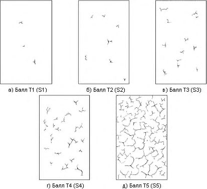
Рисунок А.2 - Растрескивание в одном предпочтительном направлении (площадь осматриваемой поверхности от 1 до 2 дм² )
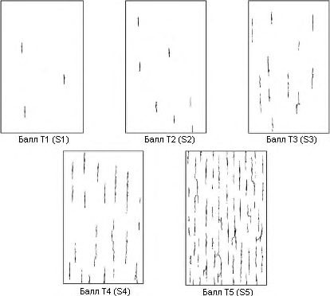
Рисунок А.5 - Короткие параллельные линии
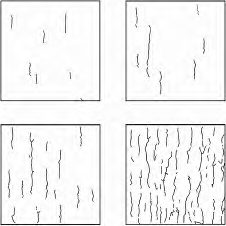
Рисунок А.6 - Пересечения
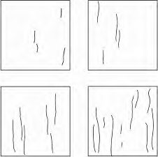
Рисунок А.11 Сигмовидные трещины
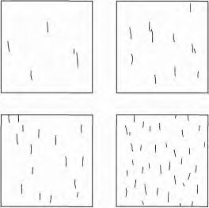
Рисунок А.12 - Отслаивание без предпочтительного направления (площадь осматриваемой поверхности от 1 до 2 дм² )
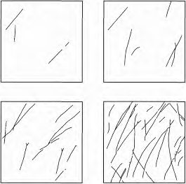
Рисунок А.13 - Отслаивание, имеющее предпочтительное направление, возникающее вследствие анизотропии материала окрашиваемой поверхности (площадь осматриваемой поверхности от 1 до 2 дм² )
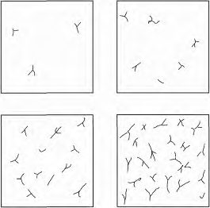
- а) Количество (плотность) 2 - балл П2 ( S 2)
- в) Количество (плотность) 4 - балл П4 ( S 2)
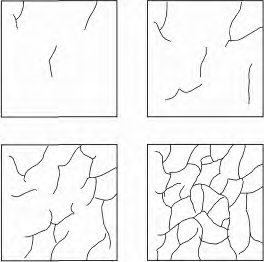
б) Количество (плотность) 3 - балл П3 ( S 2)
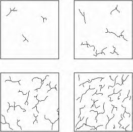
г) Количество (плотность) 5 - балл П5 ( S 2)
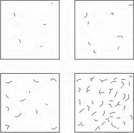
Рисунок А.14 - Пузыри (вздутия) с размером 2
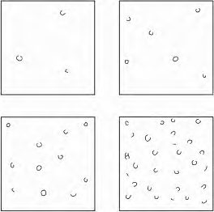
Рисунок А.15 - Пузыри (вздутия) с размером 3 а) Количество (плотность) 2 - балл П2 ( S 4)
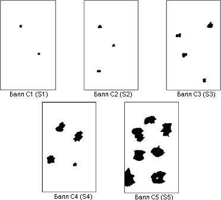
б) Количество (плотность) 3 - балл П3 ( S 4)
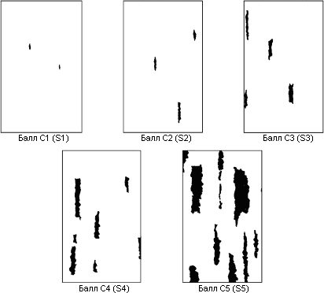
в) Количество (плотность) 4 - балл П4 ( S 4)
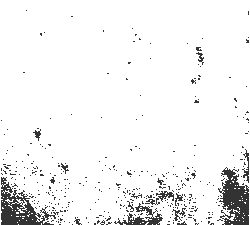
г) Количество (плотность) 5 - балл П5 ( S 4)
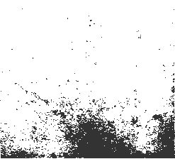
Рисунок А.16 -Пузыри (вздутия) с размером 4
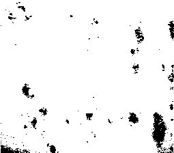
а) Количество (плотность) 2 - балл П2 ( S 5) б) Количество (плотность) 3 - балл П3 ( S 5)
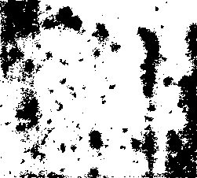
в) Количество (плотность) 4 - балл П4 ( S 5)
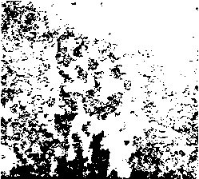
г) Количество (плотность) 5 - балл П5 ( S 5)
Рисунок А.17 - Пузыри (вздутия) с размером 5
Рисунок А.18 - Коррозия металла балл К1
Рисунок А.19 - Коррозия металла балл К2
Рисунок А.20 - Коррозия металла балл К3
Рисунок А.21 - Коррозия металла балл К4
Рисунок А.22 - Коррозия металла - балл К5
БПриложение Б. Критерии оценки допустимости типичных дефектов огнезащитных покрытий
Таблица Б.1 Критерии оценки допустимости типичных дефектов тонкослойных огнезащитных покрытий
| Тип дефекта | Условное обозначе- ние | Расположение дефектов | Критерии оценки допусти- мости |
|---|---|---|---|
| Растрескивание | Т | Поверхностные и глубо- кие (через всю систему покрытия) | Не допускаются |
| Изменение цвета | Ц | На любых поверхностях | Не допускаются |
| Отслаивание | С | Верхнего слоя и полное отслаивание | Не допускаются |
| Пузыри (вздутия) | П | На любых поверхностях | Не допускаются |
| Коррозия металла | К | На любых поверхностях | Не допускаются |
| Инородные вклю- чения | И | На любых поверхностях | Не допускаются |
| Необработанные участки | Н | На любых поверхностях | Не допускаются |
Таблица Б.2 Критерии оценки допустимости типичных дефектов толстослойных огнезащитных покрытий
| Тип дефекта | Условное обозначе- ние | Расположение дефектов | Критерии оценки допусти- мости |
|---|---|---|---|
| Растрескивание | Т | Поверхностные | Допускаются отдельные дефекты: глубина не более 1 мм; не более 3 шт на 1 м² |
| Растрескивание | Т | Глубокие (через всю си- стему покрытия) | Не допускаются |
| Отслаивание | С | Поверхностные | Допускаются отдельные дефекты: глубина не более 1 мм; не более 3 шт на 1 м² |
| Отслаивание | С | Глубокие (через всю си- стему покрытия) | Не допускаются |
| Пузыри (вздутия) | П | На любых поверхностях | Не допускаются |
Окончание таблицы Б.2
| Тип дефекта | Условное обозначе- ние | Расположение дефектов | Критерии оценки допусти- мости |
|---|---|---|---|
| Необработанные участки | Н | На любых поверхностях | Не допускаются |
| Коррозия металла | К | На любых поверхностях | Не допускаются |
Таблица Б.3 Критерии оценки допустимости типичных дефектов плитных (листовых) огнезащитных покрытий
| Тип дефекта | Условное обозначе- ние | Расположение дефектов | Критерии оценки допусти- мости |
|---|---|---|---|
| Растрескивание | Т | Поверхностные глубокие (через всю систему по- крытия) | Не допускаются |
| Зазоры в местах стыков плит (ли- стов) | З | На любых поверхностях | Не допускаются |
| Разрушение кро- мок и расслаивание плит (листов) | Р | На любых поверхностях | Не допускаются |
| Отсутствие или ослабление кре- пежных элементов | Э | На любых поверхностях | Не допускаются |
| Отслаивание плит от клеевого мате- риала | Сп | На любых поверхностях | Не допускаются |
| Осыпание или от- валивание материа- лов для герметиза- ции стыков плит (листов) | О | На любых поверхностях | Не допускаются |
| Сколы плит (ли- стов) | Ск | На любых поверхностях | Не допускаются |
Таблица Б.4 Критерии оценки допустимости типичных дефектов напыляемых огнезащитных покрытий воздуховодов
| Тип дефекта | Условное обозначе- ние | Расположение дефектов | Критерии оценки допусти- мости |
|---|---|---|---|
| Трещины | Т | Поверхностные | Допускаются отдельные дефекты: глубина не более 1 мм; не более 3 шт на 1 м² |
| Трещины | Т | Глубокие (через всю си- стему покрытия) | Не допускаются |
| Отслаивание | С | Поверхностные | Допускаются отдельные дефекты: глубина не более 1 мм; не более 3 шт на 1 м² |
| Отслаивание | С | Глубокие (через всю си- стему покрытия) | Не допускаются |
| Необработанные участки | Н | На любых поверхностях | Не допускаются |
| Инородные вклю- чения | И | На любых поверхностях | Не допускаются |
| Необработанные участки | Н | На любых поверхностях | Не допускаются |
Таблица Б.5 Критерии оценки допустимости типичных дефектов рулонных огнезащитных покрытий воздуховодов
| Тип дефекта | Условное обозначе- ние | Расположение дефектов | Критерии оценки допусти- мости |
|---|---|---|---|
| Зазоры в местах стыков | З | На любых поверхностях | Не допускаются |
| Отслаивание от клеевого материала | Cп | На любых поверхностях | Не допускаются |
| Разрывы, порезы | Рп | На любых поверхностях | Не допускаются |
| Необработанные участки | Н | На любых поверхностях | Не допускаются |
ВПриложение В. Количественные и качественные значения параметров оценки технического состояния огнезащитных покрытий
Таблица В.1 Количественные и качественные значения параметров оценки технического состояния тонкослойных огнезащитных покрытий
| Контролируемый пара- метр | Количественные и качественные значения параметров оценки огнеза- щитных покрытий | Количественные и качественные значения параметров оценки огнеза- щитных покрытий | Количественные и качественные значения параметров оценки огнеза- щитных покрытий |
|---|---|---|---|
| Хорошее | Удовлетворительное | Неудовлетворительное | |
| Изменение цвета | Нет | Нет | Потемнение, пожелтение |
| Внешний вид | Покрытие ров- ное, допустима шагрень | Покрытие ровное, до- пустима шагрень | Неровное, имеются потеки, сморщивание, дефекты и повреждения |
| Толщина покрытия | Проектная | Проектная | Отклонения среднего значе- ния в меньшую сторону |
| Адгезия методами решет- чатого или Х-образного надреза по ГОСТ 32702.2, ГОСТ 31149 | 0-1 балл | 0-1 балл | 2-5 баллов |
| Адгезия методом отрыва по ГОСТ 32299 | Более 1 МПа | Более 1 МПа | Менее 1 МПа |
| Растрескивание | Нет | Локально, на глубину одного слоя | На обширных участках |
| Отслаивание | Нет | Нет | Есть |
| Коррозия | Нет | Локально, точечно | На обширных участках |
Таблица В.2 Количественные и качественные значения параметров оценки технического состояния толстослойных напыляемых огнезащитных покрытий
| Контролируемый пара- метр | Количественные и качественные значения параметров оценки огнеза- щитных покрытий | Количественные и качественные значения параметров оценки огнеза- щитных покрытий | Количественные и качественные значения параметров оценки огнеза- щитных покрытий |
|---|---|---|---|
| Хорошее | Удовлетворительное | Неудовлетворительное | |
| Внешний вид | Покрытие ров- ное, допустима шагрень | Покрытие ровное, до- пустима шагрень | Имеются углубления более 3-10 мм |
Окончание таблицы В.2
| Контролируемый пара- метр | Количественные и качественные значения параметров оценки огнеза- щитных покрытий | Количественные и качественные значения параметров оценки огнеза- щитных покрытий | Количественные и качественные значения параметров оценки огнеза- щитных покрытий |
|---|---|---|---|
| Хорошее | Удовлетворительное | Неудовлетворительное | |
| Толщина покрытия | Проектная | Проектная | Отклонения среднего значе- ния в меньшую сторону |
| Растрескивание | Нет | Локально, на глубину одного слоя | На обширных участках |
| Отслаивание | Нет | Нет | Есть |
| Адгезия | В соответствии с инструкцией предприятия-из- готовителя | В соответствии с ин- струкцией предприя- тия-изготовителя | Если имеются отслоения |
Таблица В.3 Количественные и качественные значения параметров оценки технического состояния плитных (листовых) огнезащитных покрытий
| Контролируемый пара- метр | Количественные и качественные значения параметров оценки огнеза- щитных покрытий | Количественные и качественные значения параметров оценки огнеза- щитных покрытий | Количественные и качественные значения параметров оценки огнеза- щитных покрытий |
|---|---|---|---|
| Хорошее | Удовлетворительное | Неудовлетворительное | |
| Внешний вид | Покрытие ров- ное, без зазоров | Покрытие ровное, без зазоров | Покрытие неровное, с зазо- рами и (или) сколами |
| Толщина плиты | Проектная | Проектная | Уменьшенная, в том числе локально |
| Растрескивание | Нет | Нет | Есть |
| Зазоры в местах стыков плит (листов) | Нет | Нет | Толщиной более 0,5 мм |
| Разрушение кромок и расслаивание плит (ли- стов) | Нет | Нет | Наличие кромочных сколов размером более 1 мм. Рас- слоение плитного матери- ала |
| Отсутствие или ослабле- ние крепежных элемен- тов | Нет | Нет | Отсутствуют предусмот- ренные документацией винты, саморезы и т. п. либо они ослаблены или ча- стично выкручены |
Окончание таблицы В.3
| Контролируемый пара- метр | Количественные и качественные значения параметров оценки огнеза- щитных покрытий | Количественные и качественные значения параметров оценки огнеза- щитных покрытий | Количественные и качественные значения параметров оценки огнеза- щитных покрытий |
|---|---|---|---|
| Хорошее | Удовлетворительное | Неудовлетворительное | |
| Отслаивание плит от клеевого материала | Нет | Нет | Ослабление или отсутствие адгезии плиты к клеевому составу. Подвижность плит относительно защищаемой конструкции |
| Осыпание или отвалива- ние материалов для гер- метизации стыков плит (листов) | Нет | Нет | Нарушение целостности за- делочных материалов с об- разованием трещин или вы- падением их фрагментов |
| Сколы плит (листов) | Нет | Нет | Наличие сколов на поверх- ности покрытия, уменьша- ющих его толщину. |
Таблица В.4 Количественные и качественные значения параметров оценки технического состояния напыляемых огнезащитных покрытий воздуховодов
| Контролируемый пара- метр | Количественные и качественные значения параметров оценки огнеза- щитных покрытий | Количественные и качественные значения параметров оценки огнеза- щитных покрытий | Количественные и качественные значения параметров оценки огнеза- щитных покрытий |
|---|---|---|---|
| Хорошее | Удовлетворительное | Неудовлетворительное | |
| Внешний вид | Покрытие ров- ное | Покрытие ровное | Имеются участки с отсут- ствующим покрытием либо с уменьшенной толщиной покрытия |
| Растрескивания | Нет | Локально, на глубину одного слоя | На обширных участках |
| Толщина | Проектная | Проектная | Отклонения среднего значе- ния в меньшую сторону |
| Отслоение | Нет | Нет | Есть |
| Адгезия | В соответствии с инструкцией предприятия-из- готовителя | В соответствии с ин- струкцией предприя- тия-изготовителя | Если имеются отслоения |
Таблица В.5 Количественные и качественные значения параметров оценки технического состояния рулонных огнезащитных покрытий воздуховодов
| Контролируемый параметр | Количественные и качественные значения параметров оценки огнеза- щитных покрытий | Количественные и качественные значения параметров оценки огнеза- щитных покрытий | Количественные и качественные значения параметров оценки огнеза- щитных покрытий |
|---|---|---|---|
| Хорошее | Удовлетворительное | Неудовлетворительное | |
| Внешний вид | Покрытие ров- ное, без зазоров | Покрытие ровное, без зазоров | Покрытие частично откле- ившееся от поверхности, с зазорами в местах стыков |
| Зазоры в местах стыков | Нет | Нет | Есть |
| Отслаивание от клеевого материала | Нет | Нет | Есть |
| Разрывы, порезы | Нет | Нет | Есть |
ГПриложение Г. Состав измерений и перечень инструмента и приборов, используемых при обследовании огнезащитных покрытий и производственной среды
Таблица Г.1
| Состав измерений | ГОСТ | Наименование прибора, марка |
|---|---|---|
| 1 Оценка внешнего вида ан- тикоррозионных, огнезащитных, защитных тонкослойных покрытий | ГОСТ 9.407, ГОСТ 25706, ГОСТ 7048 | Бинокль, монокль, лупы (5-10-кратное увеличение); прибор для измерения сте- пени меления; спектрофотометр; блес- комер фотоэлектрический; миниатюр- ные видеокамеры на гибких трубках; инспекционные поворотные зеркала |
| 2 Измерение толщины ан- тикоррозионных, огнезащитных, защитных покрытий к стальным осно- ваниям | ГОСТ 31993 | Магнитные толщиномеры покрытий |
| 3 Измерение толщины тол- стослойных огнезащитных покрытий для конструктив- ной огнезащиты на сталь- ных основаниях | ГОСТ EN 823, ГОСТ 166 | Магнитные толщиномеры покрытий (с выностными датчиками); штангенцир- кули с ценой деления не менее 0,1 мм, с игольчатым щупом и линейкой |
| 4 Измерение толщины ка- бельных огнезащитных по- крытий на основе лакокра- сочных материалов | ГОСТ Р 53311, ГОСТ 166 | Штангенциркули с ценой деления не ме- нее 0,1 мм; микрометры |
| 5 Определение адгезии ан- тикоррозионных, огнезащитных, защитных тонкослойных покрытий, с толщиной слоя менее 200 мкм, к стальным основа- ниям | ГОСТ 427, ГОСТ 31149, ГОСТ 32299 | Линейка металлическая; адгезиметр |
| 6 Определение адгезии ан- тикоррозионных, огнезащитных, защитных тонкослойных покрытий, с толщиной слоя более 200 мкм к стальным конструк- циям | ГОСТ 427, ГОСТ 32702.2, ГОСТ 11042, ГОСТ 32299, ГОСТ 32299 | Линейка металлическая; адгезиметр; стальной молоток массой 250 г |
| 7 Сушка образцов материа- лов | - | Сушильный шкаф |
| 8 Документальная фото- съемка | - | Фотоаппарат, видеокамера |
Окончание таблицы Г.1
| Состав измерений | ГОСТ | Наименование прибора, марка |
|---|---|---|
| 9 Определение адгезии анти- коррозионных, огнезащитных, защитных тонкослойных (более 200 мкм) покрытий к бетонным и железобетонным основа- ниям | ГОСТ 28574, ГОСТ 11042, ГОСТ 32299 | Линейка металлическая; адгезиметр; стальной молоток массой 250 г |
| 10 Определение адгезии тол- стослойных огнезащитных покрытий для конструктив- ной огнезащиты к бетонным и железобетонным основа- ниям | ГОСТ 28574 | Стальной молоток массой 250 г; весы элек- тронные подвесные |
| 11 Определение плотности толстослойного напыляе- мого огнезащитного покры- тия для конструктивной ог- незащиты | ГОСТ 7025 | Электрошкаф сушильный; весы аналити- ческие |
| 12 Определение влажности толстослойного напыляе- мого огнезащитного покры- тия для конструктивной ог- незащиты | ГОСТ 17177 | Электрошкаф сушильный, весы аналити- ческие |
| 13 Измерение температуры воздуха | - | Термометр ртутный (от минус 50 ºС до плюс 50 ºС) |
| 14 Измерение температуры и влажности воздуха | - | Аспирационный психрометр Ассмана; термогигрометр |
| 15 Измерение глубины тре- щин | ГОСТ 166 | Щупы; штангенциркули с ценой деления не менее 0,1 мм |
| 16 Измерение длины | ГОСТ 7502 | Рулетки металлические |
| 17 Определение массы | - | Весы технические, весы аналитические |
| 18 Термический анализ об- разцов огнезащитных покры- тий | ГОСТ Р 53293 | Автоматизированные синхронные термо- анализаторы |
| 19 Измерение ширины тре- щин, зазоров | - | Щупы |
ДПриложение Д. Типичные дефекты и повреждения с методами их выявления и мерами по устранению
Таблица Д.1 Типичные дефекты и повреждения тонкослойных огнезащитных покрытий с методами их выявления и мерами по устранению
| Вид дефекта | Возможные причины появления | Метод выявле- ния дефекта | Возможные последствия | Меры по устране- нию дефекта |
|---|---|---|---|---|
| Растрескивания, от- слаивания, осыпа- ния | - Некачественная под- готовка поверхности конструкций; - несоблюдение тех- нологии нанесения; - несоответствие усло- вий нанесения и экс- плуатации: перепады температуры и влаж- ности воздуха, попа- дание влаги на готовое покрытие; - механические воз- действия в процессе эксплуатации | Визуальный со вскрытием; изучение усло- вий эксплуата- ции | Ухудшение адгезионных свойств огне- защитного по- крытия | Локальная очистка поврежденного по- крытия, подготовка поверхности, нане- сение антикоррози- онного покрытия, нанесение огнеза- щитного покрытия в соответствии с про- ектом |
| Потеки, наплывы, сморщивание | - Несоблюдение тех- нологии устройства покрытия (толщина слоя превышает допу- стимые в 1,5-2,0 раза); - несоответствие усло- вий нанесения и экс- плуатации | Визуальный | В условиях повышенной влажности (более 85 %) покрытие плохо сохнет, течет и дефор- мируется | Локальная шли- фовка покрытия |
| Пузыри, набухание | - Воздействие влаги и ее проникновения под покрытие | Визуальный; изучение условий экс- плуатации | Ухудшение адгезионных свойств огне- защитного по- крытия | Устранение причин увлажнения. Локальная очистка поврежденного по- крытия, подготовка поверхности, нане- сение антикоррози- онного покрытия, нанесение огнеза- щитного покрытия в соответствии с про- ектом |
Окончание таблицы Д.1
| Вид дефекта | Возможные при- чины появления | Метод выяв- ления де- фекта | Возможные по- следствия | Меры по устране- нию дефекта |
|---|---|---|---|---|
| Необработанные места | - Несоблюдение технологии нанесе- ния | Визуальный | - | Подготовка по- верхности, нане- сение антикорро- зионного покры- тия, нанесение ог- незащитного по- крытия в соответ- ствии с проектом |
| Коррозия металла | - Нарушение це- лостности покрытия на данном участке | Визуальный; изучение условий экс- плуатации | Ухудшение адге- зионных свойств огнезащитного покрытия | Устранение при- чин увлажнения или воздействия химически агрес- сивных веществ с последующим проведением ре- монтных работ по антикоррозионной и огнезащитной защите дефектных участков |
| Посторонние пятна, инородные включения тонко- слойных огнеза- щитных покрытий | - Воздействие влаги; - некачественная подготовка поверх- ности конструкций | Визуальный с отбором проб огнеза- щитных ма- териалов | Ухудшение адге- зионных свойств огнезащитного покрытия | Устранение при- чин увлажнения или воздействия химически агрес- сивных веществ с последующим проведением ре- монтных работ по антикоррозионной и огнезащитной защите дефектных участков |
Таблица Д.2 Типичные дефекты и повреждения толстослойных напыляемых огнезащитных покрытий с методами их выявления и мерами по устранению
| Вид дефекта | Возможные причины появления | Метод выявле- ния дефекта | Возможные последствия | Меры по устране- нию дефекта |
|---|---|---|---|---|
| Поверхностное рас- трескивание глуби- ной не более 1 мм огнезащитных по- крытий на гипсо- вом вяжущем | - Естественная усадка покрытия в процессе высыхания | Визуальный со вскрытием; изучение условий экс- плуатации | - | Ремонт не требуется |
| Необработанные места | - Несоблюдение тех- нологии нанесения | Визуальный | - | Локальная очистка поврежденного по- крытия, подготовка поверхности, нане- сение антикоррози- онного покрытия, нанесение огнеза- щитного покрытия в соответствии с про- ектом |
| Коррозия на по- верхности огнеза- щитного покрытия | - Нарушение целост- ности покрытия на данном участке | Визуальный; изучение условий экс- плуатации | Ухудшение адгезионных свойств огне- защитного по- крытия | Устранение причин увлажнения или воздействия хими- чески агрессивных веществ с последу- ющим проведением ремонтных работ по антикоррозионной и огнезащитной за- щите дефектных участков |
| Поверхностное рас- трескивание глуби- ной не более 1 мм огнезащитных по- крытий на гипсо- вом вяжущем | - Естественная усадка покрытия в процессе высыхания | Визуальный со вскрытием; изучение условий экс- плуатации | - | Ремонт не требуется |
Таблица Д.3 Типичные дефекты и повреждения плитных (листовых) огнезащитных покрытий с методами их выявления и мерами по устранению
| Вид дефекта | Возможные при- чины появления | Метод выяв- ления де- фекта | Возможные по- следствия | Меры по устранению дефекта |
|---|---|---|---|---|
| Отсутствие или ослабление кре- пежных элемен- тов | Нарушение техно- логии монтажа | Визуальный | Нарушение це- лостности огне- защитного по- крытия. Сниже- ние огнестойко- сти защищаемой конструкции. | Закрепление ослаб- ленных крепежных элементов, установка нового крепежа вза- мен утерянного |
| Отслаивание плит от клеевого материала | Некачественная подготовка поверх- ности, низкая адге- зия материалов для заделки стыков, воз- действие влаги | Визуальный | Нарушение ад- гезии. Сниже- ние толщины огнезащитного покрытия | Полное удаление плиты и клеевого ма- териала с поверхности защищаемой кон- струкции. Замена плиты и клеевого ма- териала. Заделка сты- ков |
| Трещины, разру- шение кромок и расслаивание плит (листов), наличие сколов на поверхности | Механическое воз- действие, наруше- ние технологии монтажа, низкое ка- чество материала | Визуальный | Нарушение це- лостности огне- защитного по- крытия | Замена плиты (листа) с восстановлением за- делки стыков |
| Зазоры в местах стыков плит (ли- стов), осыпание или отваливание материалов для герметизации стыков плит (ли- стов) | Нарушение техно- логии монтажа, низ- кая адгезия матери- алов для заделки стыков | Визуальный | Нарушение це- лостности огне- защитного по- крытия. Сниже- ние огнестойко- сти защищаемой конструкции | Заделка стыков мате- риалами согласно тех- нической документа- ции производителя. Полная замена заде- лочных материалов на поврежденном участке |
| Отсутствие или ослабление кре- пежных элемен- тов | Нарушение техно- логии монтажа | Визуальный | Нарушение це- лостности огне- защитного по- крытия. Сниже- ние огнестойко- сти защищаемой конструкции | Закрепление ослаб- ленных крепежных элементов, установка нового крепежа вза- мен утерянного |
где n - число измерений; i x -i -е измерение, мм;
ЕПриложение Е. Оценка и пример вычисления среднего квадратического отклонения результата измерений
Е.1 Оценку среднего квадратического отклонения результата измерений проводят по формуле ( ) S X
X - результат измерений (среднее арифметическое значение результатов всех измерений), мм.
Пример вычисления среднего квадратического отклонения результата измерений приведен в Е.2.
Е.2 Проведено пять наблюдений над нормально распределенной величиной X Результаты наблюдений приведены в таблице Е.1.
Таблица Е.11
| Номер наблюдения i | Полученный результат , мм i x |
|---|---|
| 1 | 1,05 |
| 2 | 1,15 |
| 3 | 0,92 |
| 4 | 0,91 |
| 5 | 0,98 |
Определяют:
Согласно формуле (E.2) получают: мм.
Определяют:
Согласно формуле (Е.1) получают:
Определяют среднее квадратическое отклонение в процентном выражении:
.
Среднее квадратическое отклонение в процентном выражении составило 10 % результата измерений (среднее арифметическое значение результатов всех измерений).
ЖПриложение Ж. Типовая программа мониторинга технического состояния огнезащитных покрытий
Согласовано
Руководитель экспертной организации
\_\_\_\_\_\_\_\_\_\_\_\_\_\_\_\_\_\_\_ Ф. И. О.
«\_\_\_»\_\_\_\_\_\_\_\_\_\_\_\_\_\_\_ 20\_\_ г.
Программа мониторинга технического состояния огнезащитных покрытий
\_\_\_\_\_\_\_\_\_\_\_\_\_\_\_\_\_\_\_\_\_\_\_\_\_\_\_\_\_\_\_\_\_\_\_\_\_\_\_\_\_\_\_\_\_\_\_\_\_\_\_\_\_\_\_\_\_\_\_\_\_\_\_\_\_\_\_\_\_\_\_\_\_\_\_\_\_\_
(объект)
1. Договор, на основании которого проводится работа \_\_\_\_\_\_\_\_\_
2. Наименование и месторасположение объекта мониторинга.
3. Заказчик:
- адрес\_\_\_\_\_\_\_\_\_\_\_\_\_\_\_\_\_\_\_\_\_\_\_\_\_\_\_\_\_\_\_\_\_\_\_\_\_\_\_\_\_\_\_\_\_\_\_\_\_\_\_\_\_\_\_\_\_\_\_\_\_\_\_\_
- руководитель\_\_\_\_\_\_\_\_\_\_\_\_\_\_\_\_\_\_\_\_\_\_\_\_\_\_\_\_\_\_\_\_\_\_\_\_\_\_\_\_\_\_\_\_\_\_\_\_\_\_\_\_\_\_\_\_\_
- тел./факс\_\_\_\_\_\_\_\_\_\_\_\_\_\_\_\_\_\_\_\_\_\_\_\_\_\_\_\_\_\_\_\_\_\_\_\_\_\_\_\_\_\_\_\_\_\_\_\_\_\_\_\_\_\_\_\_\_\_\_\_\_
4. Цель мониторинга \_\_\_\_\_\_\_\_\_\_\_\_\_\_\_\_\_\_\_\_\_\_\_\_\_\_\_\_\_\_\_\_\_\_\_\_\_\_\_\_\_\_\_\_\_\_\_\_\_\_\_\_\_\_\_\_\_\_
5. Данные экспертной организации:
- полное наименование организии\_\_\_\_\_\_\_\_\_\_\_\_\_\_\_\_\_\_\_\_\_\_\_\_\_\_\_\_\_\_\_\_\_\_\_\_\_\_\_\_\_\_\_\_\_
- сокращенное наименование организации\_\_\_\_\_\_\_\_\_\_\_\_\_\_\_\_\_\_\_\_\_\_\_\_\_\_\_\_\_\_\_\_\_\_\_\_\_\_\_\_
- адрес местонахождения\_\_\_\_\_\_\_\_\_\_\_\_\_\_\_\_\_\_\_\_\_\_\_\_\_\_\_\_\_\_\_\_\_\_\_\_\_\_\_\_\_\_\_\_\_\_\_\_\_\_\_\_\_\_
- тел./факс\_\_\_\_\_\_\_\_\_\_\_\_\_\_\_\_\_\_\_\_\_\_\_\_\_\_\_\_\_\_\_\_\_\_\_\_\_\_\_\_\_\_\_\_\_\_\_\_\_\_\_\_\_\_\_\_\_\_\_\_\_\_\_\_\_\_\_
- руководитель\_\_\_\_\_\_\_\_\_\_\_\_\_\_\_\_\_\_\_\_\_\_\_\_\_\_\_\_\_\_\_\_\_\_\_\_\_\_\_\_\_\_\_\_\_\_\_\_\_\_\_\_\_\_\_\_\_\_\_\_\_\_\_
- сведения о наличии документов, подтверждающих право выполнения технического об- следования\_\_\_\_\_\_\_\_\_\_\_\_\_\_\_\_\_\_\_\_\_\_\_\_\_\_\_\_\_\_\_\_\_\_\_\_\_\_\_\_\_\_\_\_\_\_\_\_\_\_\_\_\_\_\_\_\_\_\_\_\_\_\_\_\_\_\_\_\_\_
\_\_\_\_\_\_\_\_\_\_\_\_\_\_\_\_\_\_\_\_\_\_\_\_\_\_\_\_\_\_\_\_\_\_\_\_\_\_\_\_\_\_\_\_\_\_\_\_\_\_\_\_\_\_\_\_\_\_\_\_\_\_\_\_\_\_\_\_\_\_\_\_\_\_\_\_\_\_\_\_
6. Состав работ:
- 6.1 Мониторинг технического состояния огнезащитных покрытий:
- а) подготовительный этап обследования (предоставление и анализ технической и ис- полнительной документации, используемой при мониторинге\_\_\_\_\_\_\_\_\_\_\_\_\_\_\_\_\_\_\_\_\_\_\_\_\_\_
- б) этап визуального обследования\_\_\_\_\_\_\_\_\_\_\_\_\_\_\_\_\_\_\_\_\_\_\_\_\_\_\_\_\_\_\_\_\_\_\_\_\_\_\_\_\_\_\_\_
- в) детальное (инструментальное) обследование (методы, приборы, инструмент)\_\_\_\_\_
\_\_\_\_\_\_\_\_\_\_\_\_\_\_\_\_\_\_\_\_\_\_\_\_\_\_\_\_\_\_\_\_\_\_\_\_\_\_\_\_\_\_\_\_\_\_\_\_\_\_\_\_\_\_\_\_\_\_\_\_\_\_\_\_\_\_\_\_\_\_\_\_\_\_\_\_\_\_
- г) рассмотрение условий эксплуатации конструкций с огнезащитными покрыти- ями\_\_\_\_\_\_\_\_\_\_\_\_\_\_\_\_\_\_\_\_\_\_\_\_\_\_\_\_\_\_\_\_\_\_\_\_\_\_\_\_\_\_\_\_\_\_\_\_\_\_\_\_\_\_\_\_\_\_\_\_\_\_\_\_\_\_\_\_\_\_\_\_\_\_\_\_
7. Составление заключения \_\_\_\_\_\_\_\_\_\_\_\_\_\_\_\_\_\_\_\_\_\_\_\_\_\_\_\_\_\_\_\_\_\_\_\_\_\_\_\_\_\_\_\_\_\_\_\_\_\_
\_\_\_\_\_\_\_\_\_\_\_\_\_\_\_\_\_\_\_\_\_\_\_\_\_\_\_\_\_\_\_\_\_\_\_\_\_\_\_\_\_\_\_\_\_\_\_\_\_\_\_\_\_\_\_\_\_\_\_\_\_\_\_\_\_\_\_\_\_\_\_\_\_\_\_\_\_\_
8. Выдача рекомендаций \_\_\_\_\_\_\_\_\_\_\_\_\_\_\_\_\_\_\_\_\_\_\_\_\_\_\_\_\_\_\_\_\_\_\_\_\_\_\_\_\_\_\_\_\_\_\_\_\_\_\_\_
9. Порядок работ исполнителя по объекту, обеспечение доступа к конструкциям, согла- сование времени \_\_\_\_\_\_\_\_\_\_\_\_\_\_\_\_\_\_\_\_\_\_\_\_\_\_\_\_\_\_\_\_\_\_\_\_\_\_\_\_\_\_\_\_\_\_\_\_\_\_\_\_\_\_\_\_\_\_\_\_\_\_
\_\_\_\_\_\_\_\_\_\_\_\_\_\_\_\_\_\_\_\_\_\_\_\_\_\_\_\_\_\_\_\_\_\_\_\_\_\_\_\_\_\_\_\_\_\_\_\_\_\_\_\_\_\_\_\_\_\_\_\_\_\_\_\_\_\_\_\_\_\_\_\_\_\_\_\_\_\_\_
10. Мероприятия (в случае обнаружения дефектов)\_\_\_\_\_\_\_\_\_\_\_\_\_\_\_\_\_\_\_\_\_\_\_\_\_\_\_\_\_\_
\_\_\_\_\_\_\_\_\_\_\_\_\_\_\_\_\_\_\_\_\_\_\_\_\_\_\_\_\_\_\_\_\_\_\_\_\_\_\_\_\_\_\_\_\_\_\_\_\_\_\_\_\_\_\_\_\_\_\_\_\_\_\_\_\_\_\_\_\_\_\_\_\_\_\_\_\_\_\_\_
11. Сроки и этапы выполнения работы\_\_\_\_\_\_\_\_\_\_\_\_\_\_\_\_\_\_\_\_\_\_\_\_\_\_\_\_\_\_\_\_\_\_\_\_\_\_\_\_\_
Библиография
- [1] Федеральный закон от 22 июля 2008 г. № 123-ФЗ «Технический регламент о требованиях пожарной безопасности»
- [2] Федеральный закон от 30 декабря 2009 г. № 384-ФЗ «Технический регламент о безопасности зданий и сооружений»
- [3] Постановление Правительства Российской Федерации от 25 апреля 2012 г. № 390 «О противопожарном режиме»
- [4] Оценка огнезащитных свойств покрытий в зависимости от сроков их эксплуатации: методика. - 2-е изд., перераб. и доп. - М.: ВНИИПО, 2016
- [5] Оценка качества огнезащиты и установление вида огнезащитных покрытий на объектах: руководство. - М.: ВНИИПО, 2011 \_\_\_\_\_\_\_\_\_\_\_\_\_\_\_\_\_\_\_\_\_\_\_\_\_\_\_\_\_\_\_\_\_\_\_\_\_\_\_\_\_\_\_\_\_\_\_\_\_\_\_\_\_\_\_\_\_\_\_\_\_